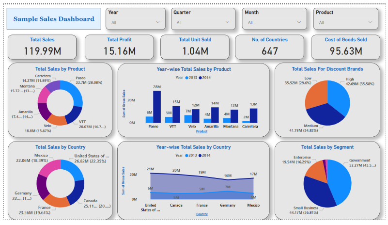
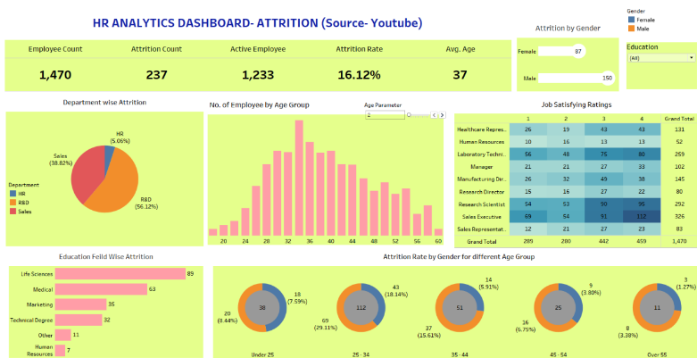

Web Development: Django, Flask, FastAPI, HTML, CSS, JavaScript
Data Engineering: Apache Kafka, Apache Spark, ETL Processes
Platforms & Tools: Google Cloud Platform, Git, GitHub, Kaggle
Projects
<<<<<<< HEAD
Sales Data Analysis Dashboard: Developed an interactive dashboard in Power BI to analyze sales data, identifying key sales trends, seasonal patterns, and high-performing product categories, enabling data-driven decision-making for stakeholders.

HR Employee Attrition Dashboard: Built an HR analytics dashboard in Tableau to visualize employee attrition rates, analyze key factors affecting turnover, and highlight insights on demographics, job satisfaction, and tenure, supporting HR retention strategies.

=======
Sales Data Analysis Dashboard:
Developed an interactive dashboard in Power BI to analyze sales data, identifying key sales trends, seasonal patterns, and high-performing product categories, enabling data-driven decision-making for stakeholders.
HR Employee Attrition Dashboard:
Built an HR analytics dashboard in Tableau to visualize employee attrition rates, analyze key factors affecting turnover, and highlight insights on demographics, job satisfaction, and tenure, supporting HR retention strategies.
>>>>>>> 55c2e23e64235f5a6b28c1eaff5f0a31d8d23c7f
Diabetes Prediction Dashboard:
Created a machine learning-powered dashboard using Python (Pandas, scikit-learn) and Power BI to predict diabetes risk based on patient data. The dashboard provided risk scoring and visualized patient health metrics, aiding healthcare professionals in early intervention.
Customer Segmentation Analysis:
Applied clustering algorithms and data visualization techniques to segment customers based on purchasing behavior. Built using Python (Pandas, scikit-learn) and Tableau, this project helped design targeted marketing campaigns.
Sales Forecasting Model:
Conducted time-series analysis and forecasting using Python (Pandas, statsmodels) to predict future sales trends, optimizing inventory levels and reducing stockouts for an e-commerce platform.
Room Occupancy Detector:
Designed a real-time monitoring system using Django, Flask, and FastAPI with data streaming and occupancy prediction models to analyze room utilization for effective space management.